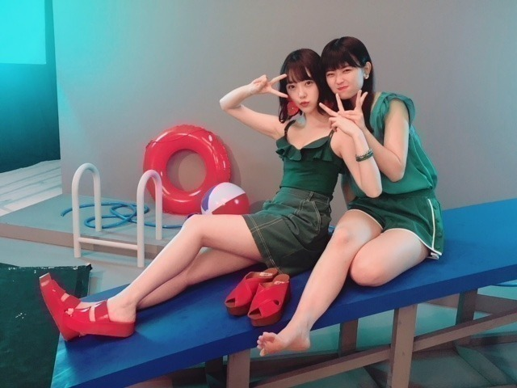

2018/0801Wed甘すぎないがちょうどいい
こんばんは
今日は レコメン前に蘭世とお買い物して
アップルパイ食べて、バイバイして
みり愛と絢音と合流して
プリン会でコードブルー観てきました
濃い一日！！！
蘭世と同じブランドのリュック柄違いで買ったんだ〜
アウトレットも行きたいねって話してた♪
服の趣味合うし話も合うし、あ、食も。
蘭世との買い物楽しいから好きやわ〜
あ、果たして親知らず抜きたての堀はアップルパイを食べれたのか。そこ、気になりますよね。笑
甘党じゃないけどアップルパイは小さい頃から好きで
よく白雪姫のアップルパイ作るシーン
繰り返し見てたなぁ。
で、やはり想像以上に左頬が腫れてしまい
顔が真四角なのでチマチマゆっくり食べました笑
甘酸っぱくて美味しかった〜
あ、あと途中でね、
美味しそうなパン屋さんを発見して、
あ！パンだ！！って大はしゃぎしてたら
蘭世に未央奈といえばパン屋みたいなイメージある
って言われて。笑
たしかに私の家族がパン大好きだから見つけたら
必ず大量買いしてるの。
よく見てるなあ〜って
さすがです！
いつかパン屋で働いてみたい〜

撮影終わりのすっぴん。笑
しっかりとした洋服も好きだし
パーカーも好きです。
8/9 に表紙のBOMBが発売されます！
美月とだよ(^_-)
今日のレコメンも22時から3時間生放送で
お送り致しますーー
聞き取りずらかったらごめんなさい...
滑舌悪くても許してね。

甘えん坊で天真爛漫なれんかに
いつも癒されてます♪



かわいいなー！
早くディズニーいこうね！りりあも！
では。
レコメン！22:00〜お聞き逃しなく。
2018/08/01 17:24
コメント(397)
未央奈更新ありがとう〜！かわいいなあレコメン聴いたよ良かったよ。
応援
ブログ更新ありがとう！
親知らずの抜歯、お疲れ様です。
早く腫れが引くといいね。
未央奈の働くパン屋さんかー
毎日行くしかないな♪
熱中症のニュースをよく見るから、
水分補給なり塩分補給なり気を付けてね！
今週末が楽しみだ♪
親知らずの抜歯、お疲れ様です。
早く腫れが引くといいね。
未央奈の働くパン屋さんかー
毎日行くしかないな♪
熱中症のニュースをよく見るから、
水分補給なり塩分補給なり気を付けてね！
今週末が楽しみだ♪
未央奈、今日も一日お疲れさまでした。
昨日は濃い一日！だったんですね。
蘭世さんとお買い物して、プリン会で映画を観て。
とっても充実した日になってて良かったです。
相変わらず仲良しさんですね。
未央奈って洋菓子より和菓子の甘さの方が好きなイメージある。ケーキとか好きだけどあまり食べてないというか。アップルパイって、砂糖とかクリームの甘さじゃなくて、リンゴそのものの甘さがあるから食べられるのかな。
全然関係ないけどさ「歯は痛むけど、アップルパイは食べられるんや」って思っちゃって笑
なんかこう、好きなものはしっかり食べる未央奈に戻ってて安心しました。
未央奈はパン屋さんのイメージか。
でも「食」に関する仕事はしてそうな感じする。
小料理屋で料理作ったり、運んだり、新メニューだーって言ってあれこれ作って試食ばっかりして。
そんな人生もあったんじゃないかな？って、思ったり思わなかったり。。。
その人に合う雰囲気って大事だと思います。
それはその人にしかない「個性」なので。
だけど、未央奈がパン屋さんで働いてたら、毎日お店に行っちゃうかもなぁ…笑
岩本さんとも仲良しなんですね。
お互いわちゃわちゃしてそう笑
どんな会話するのか、不思議ですね…
また3期生との交流話しも楽しみにしてますね。
8/9発売のBOMB楽しみです！絶対読みますね。
雑誌に未央奈が載ってるの見ると嬉しくなっちゃいます。だからついつい手に取ってしまって…。
絶対可愛く映ってるんだろうな。。。
またオフショットとか見れるのも楽しみに。
のんびり待ってますねm(_ _)m
じゃあ、最後に。
この前『志乃ちゃんは自分の名前が言えない』という映画を観てきました。「大人への近道」のMVの監督を務めた湯浅弘章さんの映画で、未央奈が観たいって言ってたから、僕も気になっちゃって。
それに、原作は押見修造さん。『惡の華』や『ぼくは魔理のなか』などの作品を描いた人です。この方が描く漫画が好きなので、映画を観るのがより楽しみになって。
とっても素晴らしい作品でしたよ！
公開期間は劇場によって違うと思いますが、8月で終わってしまいそうなのでお早めにm(_ _)m
それともう一つ。
8/8に『犬猿』という映画のDVDが発売されます。
出演は窪田正孝さん、新井浩文さん、筧美和子さん、ニッチェ・江の上さん。
そのうちレンタルも開始されると思うのですが、僕が今年観た映画の中で、一番面白いと思った映画でした！だから、未央奈にも観てもらいたいなと思って。
また握手会の時に、この話しをしてプレゼンさせてください！
未央奈とたくさん映画の話しがしたいけど、なかなかできる時間がなくて。。。
今回は時間が作れるよう頑張ってみますねm(_ _)m
体調管理には、くれぐれも気をつけて。
歯の痛みが1日でも早く和らぎますように。
熱中症にも気をつけてねm(_ _)m
ではでは、ねこでした。
更新ありがと！
すっぴん、可愛すぎるよ！！！！
親知らず痛いと思うけどがんばって
すっぴん、可愛すぎるよ！！！！
親知らず痛いと思うけどがんばって
お疲れ様✨
すっぴんかわいすぎて泣けるわ！！！！
すっぴんかわいすぎて泣けるわ！！！！
堀さん色気がすごいね！！！
相変わらずアクティブだね、未央奈は。
忙しい時ほどプライベートの時間は無駄にしたくないものだよね。
夜中辛そうだったから、どうかなと思ったけど落ち着いたみたいで良かったです。
レコメン！楽しかったですよ。仕事が早朝からなので真夏ったん登場までしか聞けてないけど、残り分は仕事帰りの楽しみにしてあります。
れんたんはいつもはじける笑顔でかわいいよね。
あの声になんかやられちゃう。
すっぴんで思い出したけど、ドームライブのエンドロールに出てくる練習風景の未央奈が、いつもと目とか雰囲気が違って、すっぴん風で何か可愛かったです。
あの場面、超お気に入りです。
では、おだいじに。大阪のライブ頑張ってください。
忙しい時ほどプライベートの時間は無駄にしたくないものだよね。
夜中辛そうだったから、どうかなと思ったけど落ち着いたみたいで良かったです。
レコメン！楽しかったですよ。仕事が早朝からなので真夏ったん登場までしか聞けてないけど、残り分は仕事帰りの楽しみにしてあります。
れんたんはいつもはじける笑顔でかわいいよね。
あの声になんかやられちゃう。
すっぴんで思い出したけど、ドームライブのエンドロールに出てくる練習風景の未央奈が、いつもと目とか雰囲気が違って、すっぴん風で何か可愛かったです。
あの場面、超お気に入りです。
では、おだいじに。大阪のライブ頑張ってください。
みおちゃん おはよー！
おはよー！
ブログ更新ありがとう＼(^o^)／
蘭世とお買い物して
プリン会でコードブルー観に行って来たんだぁ～
いいなぁ～
楽しく充実した時間を過ごせたみたいで良かったね
すっぴん可愛い
親知らず抜歯したとこ、早く腫れが引くといいね
みおちゃんが働くパン屋
毎日大盛況やろうね
暑い日が続いてるけど体調に気を付けてね
ブログ更新ありがとう＼(^o^)／
蘭世とお買い物して
プリン会でコードブルー観に行って来たんだぁ～
いいなぁ～
楽しく充実した時間を過ごせたみたいで良かったね
すっぴん可愛い
親知らず抜歯したとこ、早く腫れが引くといいね
みおちゃんが働くパン屋
毎日大盛況やろうね
暑い日が続いてるけど体調に気を付けてね
未央ちゃんおはよう
レコメンお疲れさま！面白いなぁ。。なんでこんなに面白いのか。面白いし未央ちゃんの声可愛くて好きだし、レコメンが自分史上最高のラジオ番組
寝不足になってないか心配だけど今日も1日頑張ってね！
気楽に楽しく。。素敵な1日になりますように
レコメンお疲れさま！面白いなぁ。。なんでこんなに面白いのか。面白いし未央ちゃんの声可愛くて好きだし、レコメンが自分史上最高のラジオ番組
寝不足になってないか心配だけど今日も1日頑張ってね！
気楽に楽しく。。素敵な1日になりますように
ディズニー行くんだね！！
楽しみだね！
蘭世とのお揃いはどこのブランドなんだろ〜
おすすめのリュックとかあったら知りたいな！！
すっぴん綺麗すぎだよ笑
ほんとにすごい
いつも応援してます！！
楽しみだね！
蘭世とのお揃いはどこのブランドなんだろ〜
おすすめのリュックとかあったら知りたいな！！
すっぴん綺麗すぎだよ笑
ほんとにすごい
いつも応援してます！！
未央奈ちゃんありがとうございます！今年も楽しみにしてます！頑張ります‼頑張って下さい。お疲れ様です！気を付けて下さい！
私も親知らず抜いたから同じ状況です、、、
今日も頑張っていこうヽ(・∀・)ノ
すっぴんが好きだ。未央奈のすっぴんが好きだ。だから未央奈のすべてが好きだ。という僕のロンリーな論理。
やっぽー。セブンやよ(ฅ'ω'ฅ)♪
蘭世とのデート羨ましいぞ！
我も入れてくれ！
荷物持ちのお財布くんになりますので 笑
チマチマ食べる未央奈は激レアだよね！
見てみたいわ〜
小動物みたいで可愛いやろうなぁ( ´∀｀)
コードブルー我も観たーい！
こないだやってたSPドラマもまだ観てないや
神よ我に時間を与えたまえ✨
では、今日も1日楽しもうd(@^∇ﾟ)/ﾌｧｲﾄｯ♪
o(ﾟ▽＾)ﾉｼまたねぃ♪
蘭世とのデート羨ましいぞ！
我も入れてくれ！
荷物持ちのお財布くんになりますので 笑
チマチマ食べる未央奈は激レアだよね！
見てみたいわ〜
小動物みたいで可愛いやろうなぁ( ´∀｀)
コードブルー我も観たーい！
こないだやってたSPドラマもまだ観てないや
神よ我に時間を与えたまえ✨
では、今日も1日楽しもうd(@^∇ﾟ)/ﾌｧｲﾄｯ♪
o(ﾟ▽＾)ﾉｼまたねぃ♪
黒猫を連れて、パン屋さんに居候では？
ブログ更新ありがとうございます。
抜歯して、しばらくは不自由ですよね。
抜いたあとに刺さりそうで、怖くて、柿の種が食べれなかった記憶があります。
固いものは、避けましょう
おおっ！すっぴんで、この美しさ
暑い日が続きますので、お身体をお大事に！
ブログ更新ありがとうございます。
抜歯して、しばらくは不自由ですよね。
抜いたあとに刺さりそうで、怖くて、柿の種が食べれなかった記憶があります。
固いものは、避けましょう
おおっ！すっぴんで、この美しさ
暑い日が続きますので、お身体をお大事に！
やってもうたぁー(>_<)
ブログチェック遅れレコメン聞き逃してもうたぁー
暑すぎて
何を食べても
今一つ
みお造心の俳句
未央奈 こんにちは！
えっ⁉︎ アップルパイ？ってずっと思ってた。
美味しいもんね！
今、顔が腫れて真四角でも大丈夫。
未央奈だから。
それに、親知らず抜くと小顔になるらしいよ。テレビで言ってた気が・・・多分ね。
未央奈 パーカー 似合うよね。未央奈パーカー好きだー！
レコメン 凄く楽しかったよ！
個人的に滑舌の悪いのカワイイかったけどなー
最近調子悪く、元気が無かったからパワー貰ったよ！
頑張れる！
あと来週は、イッパイ笑ってね！幸せになれるから！
未央奈は未央奈のままで、
最高の笑顔で！
えっ⁉︎ アップルパイ？ってずっと思ってた。
美味しいもんね！
今、顔が腫れて真四角でも大丈夫。
未央奈だから。
それに、親知らず抜くと小顔になるらしいよ。テレビで言ってた気が・・・多分ね。
未央奈 パーカー 似合うよね。未央奈パーカー好きだー！
レコメン 凄く楽しかったよ！
個人的に滑舌の悪いのカワイイかったけどなー
最近調子悪く、元気が無かったからパワー貰ったよ！
頑張れる！
あと来週は、イッパイ笑ってね！幸せになれるから！
未央奈は未央奈のままで、
最高の笑顔で！
こんにちは、未央奈さん
ブログ更新お疲れ様です
たまにくれる貴重なすっぴん写真に
感謝しつつ…だがしかし
たまご肌でもち肌の未央奈さんでは
違いがわからず…まるでクイズ！
ところで食わず嫌いの大人気な映画や
有名なドラマってあります？
自分は「コード・ブルー」と「海猿」
が代表格だったりする
多分観たらハマるのだろうけどその
一歩を踏み出すのが何というか今更で
面倒くさい。笑
けれど例えば「ちはやふる」には最近
になって知りハマった
そういうのも運命のめぐり合わせなの
かなって考えたりします
こんにちは。
コード・ブルー見たんですね！泣かされますよね、いつも。。
緊迫した状況下での藍沢先生の冷静さに見入ってしまいます。
それから蘭世とのおソロっちバッグ気になります！蘭世もお洒落さんだから買い物楽しそうですね( ¨̮ )
洋服はやっぱり女の子の方が豊富で楽しそうだな～ってレディースのお店を見て感じることが多いです。
パン屋さん時々出てくるので堀家パン好きは把握しました！
パン屋さんでバイトしたい気持ちわかります、焼きたてのパンは見てるだけで幸せになれそうだし、お客さんがどのパンにしようか悩んでる姿を見るのも面白そうです(笑)
そして何よりパンを貰えますよねきっと！(残っていたら)
パン屋さんって頭に何か被ってましたっけ? 制服も可愛いですよね。
アップルパイは実家でお母さんと作ったことがあります。煮たリンゴをこっそりつまみ食いしてました笑
BOMB買いますね、楽しみです。
れんかとディズニーは本当に妹ちゃんと行く感じですよね、俺も妹が中学生なのでそう考えると普段友達と行く雰囲気とはまた変わりそうです笑
暑い日が続きますがリハ、大阪公演ファイトです！腫れも早く引きますように。
あ、海はパラオの海が綺麗でした。
コード・ブルー見たんですね！泣かされますよね、いつも。。
緊迫した状況下での藍沢先生の冷静さに見入ってしまいます。
それから蘭世とのおソロっちバッグ気になります！蘭世もお洒落さんだから買い物楽しそうですね( ¨̮ )
洋服はやっぱり女の子の方が豊富で楽しそうだな～ってレディースのお店を見て感じることが多いです。
パン屋さん時々出てくるので堀家パン好きは把握しました！
パン屋さんでバイトしたい気持ちわかります、焼きたてのパンは見てるだけで幸せになれそうだし、お客さんがどのパンにしようか悩んでる姿を見るのも面白そうです(笑)
そして何よりパンを貰えますよねきっと！(残っていたら)
パン屋さんって頭に何か被ってましたっけ? 制服も可愛いですよね。
アップルパイは実家でお母さんと作ったことがあります。煮たリンゴをこっそりつまみ食いしてました笑
BOMB買いますね、楽しみです。
れんかとディズニーは本当に妹ちゃんと行く感じですよね、俺も妹が中学生なのでそう考えると普段友達と行く雰囲気とはまた変わりそうです笑
暑い日が続きますがリハ、大阪公演ファイトです！腫れも早く引きますように。
あ、海はパラオの海が綺麗でした。
コメント失礼します！
みおなのパン屋さん姿みてみたいです！
ブログ更新ありがとう
みおなのパン屋さん姿みてみたいです！
ブログ更新ありがとう
可愛いみおな❤️
腫れ大丈夫かな？
コードブルー観たり、ショッピングや食事したり、皆と楽しんでるね♪
お仕事も遊びも楽しんでファイト！
腫れ大丈夫かな？
コードブルー観たり、ショッピングや食事したり、皆と楽しんでるね♪
お仕事も遊びも楽しんでファイト！
レコメン！3時間、お疲れ様でした！
まさかの腫れ未央奈だったとは！
でも食欲は止められなかったんですねー！
未央奈ちゃんらしいです(笑)☆
まさかの腫れ未央奈だったとは！
でも食欲は止められなかったんですねー！
未央奈ちゃんらしいです(笑)☆
未央奈ちゃんこんばんは！ありがとうございます‼今年もかなり楽しみにしてます‼頑張ります‼頑張って下さい！頑張ります‼頑張って下さい。お疲れ様です！気を付けて下さい
未央蘭世尊い
こんにちは
俺も偶然お昼にアップルパイ食べました♪
蘭世ちゃんの服のセンスは素敵ですよね～
プリン会とはやっぱり気が合うのですね！
蘭世ちゃんはアパレルが似合いそうだし、
みおちゃんはパン屋さんが似合いますよ◎
そして、すっぴん写真にはイチコロでした！
前々回ブログ写真にも言葉が詰まりました♡
レコメン！とっても面白かったです！
美月ちゃんとの共演には興味津々でしたよ☆
れんたんには色々と癒されますよね～☺
俺も偶然お昼にアップルパイ食べました♪
蘭世ちゃんの服のセンスは素敵ですよね～
プリン会とはやっぱり気が合うのですね！
蘭世ちゃんはアパレルが似合いそうだし、
みおちゃんはパン屋さんが似合いますよ◎
そして、すっぴん写真にはイチコロでした！
前々回ブログ写真にも言葉が詰まりました♡
レコメン！とっても面白かったです！
美月ちゃんとの共演には興味津々でしたよ☆
れんたんには色々と癒されますよね～☺
こんにちは、お疲れさま！
暑いね。
熱中症対策はしてますか？
れんかちゃんとのショット、なかなかセクシーやないかい？
堀ちゃん、グリーンって珍しい？
あっ、コードブルー見に行ったんや！
俺も見に行かないと！
ドラマはSEASONS1からずっと見てきたよ。
10年前から今も好きです。
いろんなドラマや映画あるけど、恋愛もの、アクション、様々あるよね！
コードブルーは、喜怒哀楽、壁にぶつかっても諦めない心が好きです。
あとは、やはりミスチルの歌かな？
あと少し前の映画で、君に届けが好きです。
長くなりました。
体調気をつけて頑張りね。
ほなね、堀ちゃん！
暑いね。
熱中症対策はしてますか？
れんかちゃんとのショット、なかなかセクシーやないかい？
堀ちゃん、グリーンって珍しい？
あっ、コードブルー見に行ったんや！
俺も見に行かないと！
ドラマはSEASONS1からずっと見てきたよ。
10年前から今も好きです。
いろんなドラマや映画あるけど、恋愛もの、アクション、様々あるよね！
コードブルーは、喜怒哀楽、壁にぶつかっても諦めない心が好きです。
あとは、やはりミスチルの歌かな？
あと少し前の映画で、君に届けが好きです。
長くなりました。
体調気をつけて頑張りね。
ほなね、堀ちゃん！
可愛い！
ブログ更新ありがとうございます！
楽しみを満喫できてますね！
いつも応援しています！
楽しみを満喫できてますね！
いつも応援しています！
韓国から応援している陸軍兵士です！
堀さん！ゲロ暑いので水とかちゃんと飲んで下さいね！
頑張って下さい！ ：）
堀さん！ゲロ暑いので水とかちゃんと飲んで下さいね！
頑張って下さい！ ：）
お疲れ様です
写真可愛い最高〜
自分もアップルパイ大好きです！マックでよく食べます笑
暑さに負けずに頑張ろうねー
写真可愛い最高〜
自分もアップルパイ大好きです！マックでよく食べます笑
暑さに負けずに頑張ろうねー
お仕事お疲れ様でございます
昨日のレコメン大変そうでしたね…
笑いをこらえなければならないなんて
でも食べるものは食べる！
という信念を貫く食べっぷり
また今回のレコメン聞きながら、笑いながら作業させて頂きます
コードブルー羨ましいです‼︎10年越しの映画
平成最後の夏の映画は
未央奈ちゃんは何を見るんですかね
ライブ前にお買い物に映画行けて良かったですね
まだ抜いて痛いと思いますけど、ライブまでに痛み引きますように
楽しそうなお二人！
もうすぐ新曲発売ですね‼︎
体調お気をつけてライブ楽しんでください^ ^
では。
昨日のレコメン大変そうでしたね…
笑いをこらえなければならないなんて
でも食べるものは食べる！
という信念を貫く食べっぷり
また今回のレコメン聞きながら、笑いながら作業させて頂きます
コードブルー羨ましいです‼︎10年越しの映画
平成最後の夏の映画は
未央奈ちゃんは何を見るんですかね
ライブ前にお買い物に映画行けて良かったですね
まだ抜いて痛いと思いますけど、ライブまでに痛み引きますように
楽しそうなお二人！
もうすぐ新曲発売ですね‼︎
体調お気をつけてライブ楽しんでください^ ^
では。
ブログ更新ありがとう(≧▽≦)レコメン楽しかった(≧▽≦)
すっぴんでも変わらず可愛いね！
親知らずで腫れてても、アップルパイ食べれたのはすごい！
今週も暑いみたいだから、体に気をつけてコンサート頑張ってね
親知らずで腫れてても、アップルパイ食べれたのはすごい！
今週も暑いみたいだから、体に気をつけてコンサート頑張ってね
パン屋未央奈
いいな！買い物行きたい！
ではまた！
いいな！買い物行きたい！
ではまた！
こんばんは！
親知らず抜きたては大変だよね
抜いた穴に米つぶが入ったり(笑)
仕事でよくパン屋さんに行くけど、未央奈が働いていたら、無駄に通ってしまうな(笑)
未央奈はすっぴんでも、ばり可愛い
あさっての大阪ライブ、アリーナから応援するぜ
じゃね！
親知らず抜きたては大変だよね
抜いた穴に米つぶが入ったり(笑)
仕事でよくパン屋さんに行くけど、未央奈が働いていたら、無駄に通ってしまうな(笑)
未央奈はすっぴんでも、ばり可愛い
あさっての大阪ライブ、アリーナから応援するぜ
じゃね！
もー未央奈〜(＞人＜;)なんと言うタイミングなのですか！！笑
私は最近ね、私が未央奈と仲よさそうにしてる人達に嫉妬してばかりだと、むしろ未央奈に迷惑かかるんじゃないかな？？って実は結構悩んだ末に嫉妬しないようにこれからは我慢しようってしはじめてたのね。^ ^
そして今日のモバメですよ！！！！笑笑笑
超ミラクルハイパーグレート羨ましいじゃないですか。755コメにモバメで個別返信なんて！！！(＞人＜;)しかも私が好きなファッションの話。もー嫉妬しないと決めたはずなのに試練ですよっっ。笑
でも、頑張りたいと思います。(*´-`)
誕生日のお花色々考えてます。青い薔薇が好きって言っていたのでもちろん候補なのですが、デザイナーなのでデザインに凝るのも捨て難いし、花言葉で贈る花を決めるのもいいですよね。運営に問い合わせたら、中々に自由度がありそうでした。
私は警察官時代に生花を習ったこともあるので、出来るならば自分で活けた花を贈りたいのですが、こちらは残念ながら握手会だと花が萎れちゃうから無理なんですよね。。
むずかしいです。
私は最近ね、私が未央奈と仲よさそうにしてる人達に嫉妬してばかりだと、むしろ未央奈に迷惑かかるんじゃないかな？？って実は結構悩んだ末に嫉妬しないようにこれからは我慢しようってしはじめてたのね。^ ^
そして今日のモバメですよ！！！！笑笑笑
超ミラクルハイパーグレート羨ましいじゃないですか。755コメにモバメで個別返信なんて！！！(＞人＜;)しかも私が好きなファッションの話。もー嫉妬しないと決めたはずなのに試練ですよっっ。笑
でも、頑張りたいと思います。(*´-`)
誕生日のお花色々考えてます。青い薔薇が好きって言っていたのでもちろん候補なのですが、デザイナーなのでデザインに凝るのも捨て難いし、花言葉で贈る花を決めるのもいいですよね。運営に問い合わせたら、中々に自由度がありそうでした。
私は警察官時代に生花を習ったこともあるので、出来るならば自分で活けた花を贈りたいのですが、こちらは残念ながら握手会だと花が萎れちゃうから無理なんですよね。。
むずかしいです。
堀ちゃん、大好きだよ〜
スッピン可愛い❤️
新曲良いね
夏らしくてすごく好き
新曲良いね
夏らしくてすごく好き
おいすー^^
ちょっと聞いて!シリーズ ( ﾟДﾟ)σ
「ぼくのなつやすみ」
先日の休みの事だが朝起きると空が曇っていた
ワシ（｀・皿・´）曇っとるやん 外に歩きに行ったろ!
15分後いつもの遊歩道、
えらいカンカン照りであった
ワシ（´；皿；｀）曇ってたのは家の周りだけやん 孔明の罠!
暑さにまいって、途中隣接した小さな公園でぶら下がり運動してると
お爺さんとその孫らしき幼稚園ぽい男の子がやって来た
虫かごに蝉をたんまりと捕まえている
男の子（｀・ω・´）「おじいちゃん、のど乾いた~」
おじい（*´д`*）「そこの水飲み場で飲みぃ」(よくある蛇口ひねると上に水が出るやつ)
すると、、、
男の子ヽ（`Д´）ﾉ「おじいちゃん! 幼い子に生水は体に悪いんやで!」
おじい（；´Д｀）「おお、おお、ほな家に帰るか」
男の子ヽ（`Д´）ﾉ「おなか壊すんやで! ミネラルウォーターやないと!」
おじい（；´Д｀）「わかったわかった はよ帰ろう」
男の子はめっちゃお怒りやねん
ワシ(；ﾟ皿ﾟ)お子様言うねぇ、おじいちゃんタジタジや
最近の子はデリケートなんかな
ワシの子供の時は蛇口に吸い付い取ったけどな←
そうしてるうちに日差しが雲に遮られて丁度いい感じになったので
今のうちに帰ることにすると
WALKMANから夏のミラージュが流れてきた
遊び心に
呪文ふりかけて
夢中にさせたい
あなたの心を
ちょっと聞いて!シリーズ ( ﾟДﾟ)σ
「ぼくのなつやすみ」
先日の休みの事だが朝起きると空が曇っていた
ワシ（｀・皿・´）曇っとるやん 外に歩きに行ったろ!
15分後いつもの遊歩道、
えらいカンカン照りであった
ワシ（´；皿；｀）曇ってたのは家の周りだけやん 孔明の罠!
暑さにまいって、途中隣接した小さな公園でぶら下がり運動してると
お爺さんとその孫らしき幼稚園ぽい男の子がやって来た
虫かごに蝉をたんまりと捕まえている
男の子（｀・ω・´）「おじいちゃん、のど乾いた~」
おじい（*´д`*）「そこの水飲み場で飲みぃ」(よくある蛇口ひねると上に水が出るやつ)
すると、、、
男の子ヽ（`Д´）ﾉ「おじいちゃん! 幼い子に生水は体に悪いんやで!」
おじい（；´Д｀）「おお、おお、ほな家に帰るか」
男の子ヽ（`Д´）ﾉ「おなか壊すんやで! ミネラルウォーターやないと!」
おじい（；´Д｀）「わかったわかった はよ帰ろう」
男の子はめっちゃお怒りやねん
ワシ(；ﾟ皿ﾟ)お子様言うねぇ、おじいちゃんタジタジや
最近の子はデリケートなんかな
ワシの子供の時は蛇口に吸い付い取ったけどな←
そうしてるうちに日差しが雲に遮られて丁度いい感じになったので
今のうちに帰ることにすると
WALKMANから夏のミラージュが流れてきた
遊び心に
呪文ふりかけて
夢中にさせたい
あなたの心を
こんにちは‼︎
レコメン、聴きましたよ♪
あざと三姉妹は自分にとって黄金トリオ…‼︎
とっても贅沢な回でした♪
未央奈は親知らずを抜いてサ行が言えない中、よく頑張りましたね♪
三女は特段口内の問題はないはずなのに、カ行を噛んでましたからね(笑)。
それを考えれば、未央奈は上出来だったと思います‼︎
アドレス読みは長女にお任せして、持ちつ持たれつの姉妹愛に感動しました(笑)。
おかげさまで、口の中が血みどろにならずに済みましたね‼︎(笑)
たしか、今年の初め頃にも親知らずを抜いてましたよね？
あと1本残っているのかな？これで終わり？
自分は下の2本はまだ残っていますが、おそらくこのまま人生を全うします(笑)。
いずれにせよ、未央奈のほっぺたの腫れが早く引いて、アップルパイでも焼き肉でもBBQでも(笑)、思う存分食べれるようになりますように…‼︎
さて、まだまだ暑い日が続きそうですね。
ライブもあるし、忙しい日々が続くと思いますが、体調に気をつけて頑張ってください‼︎
ではでは、また。
明日も未央奈にとっていい1日になりますように♪
レコメン、聴きましたよ♪
あざと三姉妹は自分にとって黄金トリオ…‼︎
とっても贅沢な回でした♪
未央奈は親知らずを抜いてサ行が言えない中、よく頑張りましたね♪
三女は特段口内の問題はないはずなのに、カ行を噛んでましたからね(笑)。
それを考えれば、未央奈は上出来だったと思います‼︎
アドレス読みは長女にお任せして、持ちつ持たれつの姉妹愛に感動しました(笑)。
おかげさまで、口の中が血みどろにならずに済みましたね‼︎(笑)
たしか、今年の初め頃にも親知らずを抜いてましたよね？
あと1本残っているのかな？これで終わり？
自分は下の2本はまだ残っていますが、おそらくこのまま人生を全うします(笑)。
いずれにせよ、未央奈のほっぺたの腫れが早く引いて、アップルパイでも焼き肉でもBBQでも(笑)、思う存分食べれるようになりますように…‼︎
さて、まだまだ暑い日が続きそうですね。
ライブもあるし、忙しい日々が続くと思いますが、体調に気をつけて頑張ってください‼︎
ではでは、また。
明日も未央奈にとっていい1日になりますように♪
かわいい、それに尽きる
こんばんは。
再びコメント。
夕方書いたやつ載らなかった(笑)
残念、しゃあないか(笑)
とにかく、体調気をつけて頑張りね。
載らなかったら次書きにくいね(泣)
ではでは、またね。
堀ちゃん！
再びコメント。
夕方書いたやつ載らなかった(笑)
残念、しゃあないか(笑)
とにかく、体調気をつけて頑張りね。
載らなかったら次書きにくいね(泣)
ではでは、またね。
堀ちゃん！
家族はいつまでも大切にね。
明日から、大阪ヤンマースタジアムのリハーサルですよね。
大阪土日は37度見たいだから、日焼けに熱中症に気をつけていっぱいコンサート楽しんでね。
僕は日曜日行きます。
大阪の土曜日は、なにわ淀川花火大会があるし、兵庫県のみなとこうべ海上花火大会があります。
明日から、大阪ヤンマースタジアムのリハーサルですよね。
大阪土日は37度見たいだから、日焼けに熱中症に気をつけていっぱいコンサート楽しんでね。
僕は日曜日行きます。
大阪の土曜日は、なにわ淀川花火大会があるし、兵庫県のみなとこうべ海上花火大会があります。
堀さん、こんばんは。
ブログ更新してくれて嬉しいです。
アップルパイきちんと食べられたみたいで良かったです。ライブ前に食べれてなくて夏バテなんてことになったら大変です。他にも噛まなくていいように、「なくなっちゃった」ってくらいのいい肉でハンバーグ作るなんていかがでしょうか。
あと自分が食べれなくてもパン見たらテンション上がるとは流石です。
僕はドラマ見てなかったんですけどコードブルー見ようと思います。それと白雪姫も気になります。アップルパイ作る場面なんてあったんですね。毒リンゴでアップルパイ作ってたら加熱されて話が変わってたんじゃないかって気になってます。
本音を言うと腫れた顔めちゃくちゃ見たいです。レコメンのtwitterではほぼ隠しきってますけど、絶対かわいいと思います。堀さんが普段言われてる種類の「可愛い」ではないから嫌かもしれませんけど。見せなくてもいいので写真だけは撮っといたら、後々なにかしらに役立つと思います。
モバメも沢山送ってくれて嬉しいです。犬って人の気持ちに本当に敏感ですよね。犬撫でたら自分の痛みがやわらぐって話もあるので、本当に助けに来てるんだと思います。だから沢山撫でてあげて欲しいです。余談ですけどプティがポチに似てると思ってポチッと検索したところ、petitがポチの語源という説もあるにはあるそうです。それよりもただ似てただけっていう説の方がシンクロ感あって面白いですけどね。
あと少し前にコメントで勧めた「カメラを止めるな！」って映画が渋谷も池袋も連日満員で中々見れない状態だったらしいんですけど、８月３日からTOHOシネマズの日比谷、日本橋、六本木、新宿で見れるので、ライブ後にでも暇があればお勧めです。評判いいので僕が勧めなくても恐らく見る羽目になるとは思います。あと内容調べずに見るのがお勧めなんですが、テレビ等でネタバレ込みの宣伝がなされることもあるのでどうかお気をつけください。
もちろんですがライブに向けて体調の方もお気をつけください。何事もなく無事ライブが終わることと、ライブが信じらんないくらい大成功することを祈ってます。
ブログ更新してくれて嬉しいです。
アップルパイきちんと食べられたみたいで良かったです。ライブ前に食べれてなくて夏バテなんてことになったら大変です。他にも噛まなくていいように、「なくなっちゃった」ってくらいのいい肉でハンバーグ作るなんていかがでしょうか。
あと自分が食べれなくてもパン見たらテンション上がるとは流石です。
僕はドラマ見てなかったんですけどコードブルー見ようと思います。それと白雪姫も気になります。アップルパイ作る場面なんてあったんですね。毒リンゴでアップルパイ作ってたら加熱されて話が変わってたんじゃないかって気になってます。
本音を言うと腫れた顔めちゃくちゃ見たいです。レコメンのtwitterではほぼ隠しきってますけど、絶対かわいいと思います。堀さんが普段言われてる種類の「可愛い」ではないから嫌かもしれませんけど。見せなくてもいいので写真だけは撮っといたら、後々なにかしらに役立つと思います。
モバメも沢山送ってくれて嬉しいです。犬って人の気持ちに本当に敏感ですよね。犬撫でたら自分の痛みがやわらぐって話もあるので、本当に助けに来てるんだと思います。だから沢山撫でてあげて欲しいです。余談ですけどプティがポチに似てると思ってポチッと検索したところ、petitがポチの語源という説もあるにはあるそうです。それよりもただ似てただけっていう説の方がシンクロ感あって面白いですけどね。
あと少し前にコメントで勧めた「カメラを止めるな！」って映画が渋谷も池袋も連日満員で中々見れない状態だったらしいんですけど、８月３日からTOHOシネマズの日比谷、日本橋、六本木、新宿で見れるので、ライブ後にでも暇があればお勧めです。評判いいので僕が勧めなくても恐らく見る羽目になるとは思います。あと内容調べずに見るのがお勧めなんですが、テレビ等でネタバレ込みの宣伝がなされることもあるのでどうかお気をつけください。
もちろんですがライブに向けて体調の方もお気をつけください。何事もなく無事ライブが終わることと、ライブが信じらんないくらい大成功することを祈ってます。
未央奈ー❗️
ブログありがとう❗️
レコメン聴いたよー
のりさんもアップルパイ食べたって言ってたね❗️
親知らず抜いて腫れてるんだよね
早く腫れがひいてお肉たくさん食べてね～
暑いから体調に気をつけてね✊❗️
ゆうたんより
ブログありがとう❗️
レコメン聴いたよー
のりさんもアップルパイ食べたって言ってたね❗️
親知らず抜いて腫れてるんだよね
早く腫れがひいてお肉たくさん食べてね～
暑いから体調に気をつけてね✊❗️
ゆうたんより
ブログ更新ありがとう✨
すっぴんショットが美しすぎて…
肌の透明度が高くて見惚れてしまう☺︎
昨日のレコメン!めっちゃ面白かったよ♪
抜歯後であまり笑うことができない堀ちゃんをボケて笑わせようとする のりさんとかね！
大阪ライブめっちゃ暑くなると思うけど熱中症に気をつけてガンバ٩( 'ω' )و
すっぴんショットが美しすぎて…
肌の透明度が高くて見惚れてしまう☺︎
昨日のレコメン!めっちゃ面白かったよ♪
抜歯後であまり笑うことができない堀ちゃんをボケて笑わせようとする のりさんとかね！
大阪ライブめっちゃ暑くなると思うけど熱中症に気をつけてガンバ٩( 'ω' )و
ほりっぴ～、ナンチです♪
親不知抜き後の具合はどう？
歳がいもなくビビってて、まだ親不知が複数本残ってる
だって入院が必要なくらい斜めにはえてるらしいんだもの
怖いわ～
ほりっぴ～の勇気と決断力を分けてください
コードブルー観に行きたい～
仕事終わりに地元の映画館でレイトショーで観るのが好きなんだよね
親不知抜き後の具合はどう？
歳がいもなくビビってて、まだ親不知が複数本残ってる
だって入院が必要なくらい斜めにはえてるらしいんだもの
怖いわ～
ほりっぴ～の勇気と決断力を分けてください
コードブルー観に行きたい～
仕事終わりに地元の映画館でレイトショーで観るのが好きなんだよね


プリン会でコードブルー観に行ったんだね！いいねぇ！！✨
すっぴん未央奈可愛すぎでしょ！！！❤❤
もう、日に日に未央奈が可愛くなってってる ❤(元から可愛いけど)
残りの全ツも頑張ってねぇ！！行けないから家で応援してます！！ ✨体調管理には気おつけてね！
年明けくらいにはまた握手会行くからそれまで未央奈に会えなくて寂しいけど、お互い頑張ろうねぇ！！✨✨その時はよろしくだよ！！
また、ブログ更新楽しみにしてるねぇ！！✨✨
( o≧д≦)oｶﾞﾝﾊﾞﾚｰ!!未央奈❤